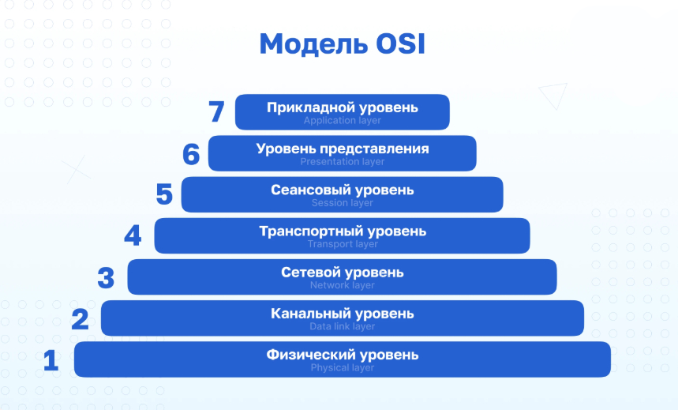
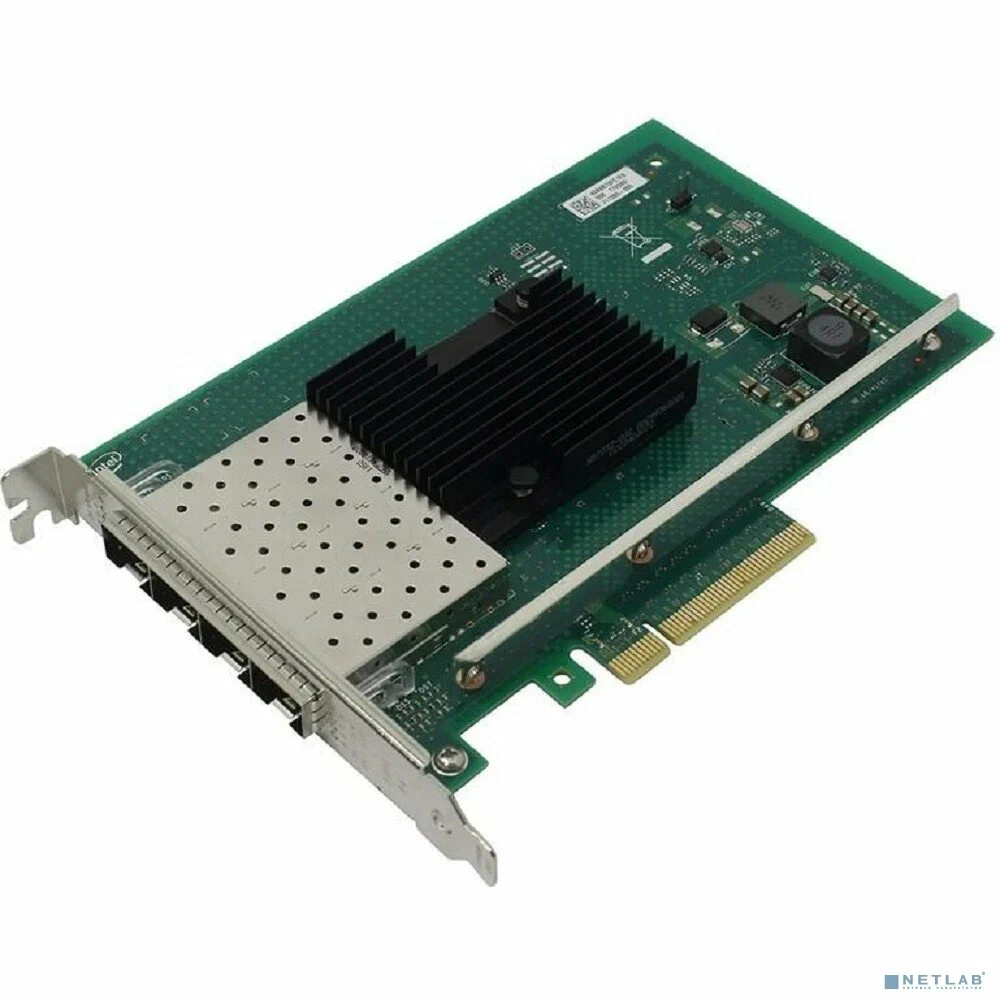
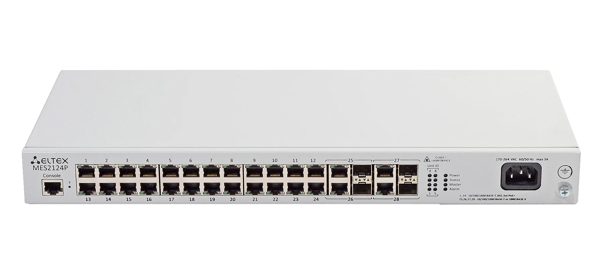
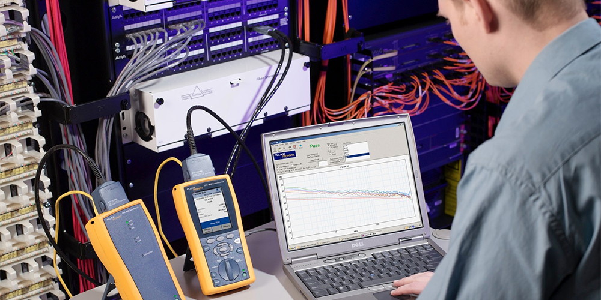

Сурцов Владимир Владимирович

Сетевая карта (также известная как сетевой адаптер, NIC — Network Interface Card или LAN-адаптер) — это фундаментальный компонент любого конечного узла сети. Если коммутатор объединяет устройства в сеть, то именно сетевая карта является тем «окном», через которое компьютер смотрит в эту сеть.

Исходящий трафик (Компьютер → Сеть): Операционная система передает данные приложению-драйверу. Драйвер упаковывает их в кадр Ethernet, добавляет заголовки с MAC-адресами источника и назначения, после чего сбрасывает готовый кадр в буфер сетевой карты. Контроллер карты считывает его и переводит в последовательность электрических сигналов.
Входящий трафик (Сеть → Компьютер): Карта постоянно «слушает» кабель. Увидев сигнал, она проверяет MAC-адрес назначения. Если он совпадает с ее собственным (или является широковещательным), карта копирует кадр из своего буфера в оперативную память компьютера и генерирует прерывание (Interrupt), сообщая процессору о поступлении новых данных.
Сетевой коммутатор (Switch) — это «интеллектуальный центр» локальной сети, устройство канального уровня (L2), которое соединяет узлы (компьютеры, серверы, принтеры) в единую инфраструктуру.

Пересылка кадров (Forwarding): При получении кадра для передачи коммутатор изучает MAC-адрес назначения.
Оборудование сетевого уровня (L3) модели OSI предназначено для работы с логической адресацией — IP-адресами. В отличие от устройств второго уровня, которые оперируют физическими MAC-адресами внутри одной локальной сети, L3-устройства способны соединять разные подсети и определять оптимальный путь передачи данных между ними.
Классические устройства третьего уровня. Их основная задача — соединение различных сетей (например, локальной офисной сети с глобальной сетью Интернет).
Это гибридные устройства, объединяющие высокую скорость коммутации L2 и интеллектуальную маршрутизацию L3.
Внутри локальной сети (в пределах одного VLAN) они работают как обычные коммутаторы. Как только пакету нужно перейти из одной подсети в другую, устройство задействует модуль маршрутизации.

Перед тем, как начать диагности и, тем более, починку необходимо собрать следующую информацию:
При диагностики проблем на 1 уровне OSI, нужно убедиться в том, что сигналы проходят от устройства к устройству исправно.Признаки:
При диагностики проблем на 2 уровне OSI, нужно убедиться в том, что кадры проходят от отправителя к пункту назначения.Признаки:
arp -a # вывод ARP таблицыip neigh show # еще один вывод ARP таблицыtraceroute 10.0.1.5 # посмотреть все узлы по пути следования.При диагностики проблем на 3 уровне OSI, нужно убедиться в том, что пакеты могут быть доставлены из одной подсети в другую.Признаки:
ping 10.0.1.5 # отправить ICMP запросip route # посмотреть маршруты, особое внимание маршруту defaulttraceroute 10.0.1.5 # посмотреть все узлы по пути следования.DHCP (Dynamic Host Configuration Protocol) — это сетевой протокол, который позволяет устройствам автоматически получать IP-адрес и другие параметры для работы в сети.
| Код опции | Название и назначение |
|---|---|
| 1 | Маска подсети (Subnet Mask). |
| 3 | Шлюз по умолчанию (Default Gateway). |
| 6 | DNS-серверы (DNS Servers). |
| 12 | Имя хоста (Hostname). |
| 15 | Доменное имя (Domain Name). |
| 42 | Серверы времени (NTP Servers). |
| 51 | Время аренды IP-адреса (IP Address Lease Time). |
| 82 | Информация для настройки агента ретрансляции (DHCP Relay). |
| 66 | TFTP-сервер (TFTP Server). |
| 67 | Имя файла для сетевой загрузки (TFTP File Name). |
| 121 | Бесклассовые статические маршруты (Classless Static Routes). |
# Общие настройки для всех сетей
option domain-name "vshte.local";
option domain-search "vshte.local", "office.vshte.local";
option ntp-servers 192.168.10.1; # Адрес локального сервера времени
domain-name-servers 192.168.10.1; # DNS
default-lease-time 600; # Время аренды в секундах
max-lease-time 86400; # максимальное время аренды IP-адреса
# подсеть управления серверами (vlan 10)
subnet 192.168.1.0 netmask 255.255.255.0 { # Сеть и маска сети
range 192.168.1.50 192.168.1.100; # Диапазон выдачи
option routers 192.168.1.1; # Шлюз option
option broadcast-address 192.168.1.255; # Адрес для широковещательных запросов
filename "pxelinux.0"; # путь до загрузчика PXE
next-server 192.168.1.10; # IP TFTP-сервера откуда будет грузиться система
}
# подсеть пк сотрудников (vlan 11)
subnet 192.168.2.0 netmask 255.255.255.0 {
range 192.168.2.10 192.168.2.250;
option routers 192.168.2.1;
option broadcast-address 192.168.2.255;
default-lease-time 1800; # 30 минут
max-lease-time 3600; # 1 час
}
# настройки для хоста (резервирование)
host kubernetes-worker-node-1 {
hardware ethernet 00:11:22:AA:BB:CC;
fixed-address 192.168.1.5;
option host-name "kubernetes-worker-node-1";
}
DNS (Domain Name System — Система доменных имён) представляет собой распределенную иерархическую компьютерную систему, функционирующую в качестве глобальной базы данных для преобразования символических имен узлов в числовые сетевые адреса (IP-адреса) и предоставления информации о доступных сетевых службах. Протокол DNS функционирует на прикладном уровне модели OSI (L7) и базируется преимущественно на транспортном протоколе UDP (порт 53), с переходом на TCP
$TTL 86400 ; Время жизни кэша (1 сутки)
@ IN SOA ns1.company.local. admin.company.local. (
2023102701 ; Серийный номер (Дата+версия, обновлять при правках!)
3600 ; Обновление (Refresh)
1800 ; Повтор (Retry)
604800 ; Истечение (Expire)
86400 ) ; Негативный кэш (Minimum)
; ====================== СЛУЖЕБНЫЕ ЗАПИСИ ======================
; NS-серверы (кто отвечает за зону)
@ IN NS ns1.company.local.
@ IN NS ns2.company.local.
; MX-запись (почта). Приоритет 10 — самый высокий.
@ IN MX 10 mail.company.local.
; ====================== АДРЕСНЫЕ ЗАПИСИ ======================
; Name Servers (должны быть с A-записями - Glue records)
ns1 IN A 192.168.10.2
ns2 IN A 192.168.10.3
; Критическая инфраструктура
gateway IN A 192.168.10.1
mail IN A 192.168.10.10
ad-controller IN A 192.168.10.20
; Рабочие станции и сервисы
fileserver IN A 192.168.10.50
printer-floor1 IN A 192.168.10.100
; Алиасы (CNAME)
www IN CNAME ad-controller.company.local.
vpn IN CNAME gateway.company.local.
; ====================== IPv6 (AAAA) ======================
ns1 IN AAAA fd00:1:2:3::2
NTP (Network Time Protocol — Протокол сетевого времени) — это протокол прикладного уровня модели OSI, предназначенный для синхронизации системных часов компьютеров в распределенных сетях. В иерархии протоколов он занимает уровень L7 и функционирует поверх транспортного протокола UDP (порт 123).
Протокол использует алгоритм Марзулло для выбора наиболее достоверного источника времени из нескольких доступных. Процесс обмена данными между клиентом ($C$) и сервером ($S$) включает четыре временные метки:
Offset (Смещение):
Delay (Задержка):
Для минимизации погрешности, вызванной нестабильностью задержки канала, NTP отправляет серию пакетов (режим iburst) и вычисляет среднее смещение (jitter), плавно корректируя системные часы во избежание резких скачков времени (time jumps), которые могут нарушить работу транзакционных баз данных.